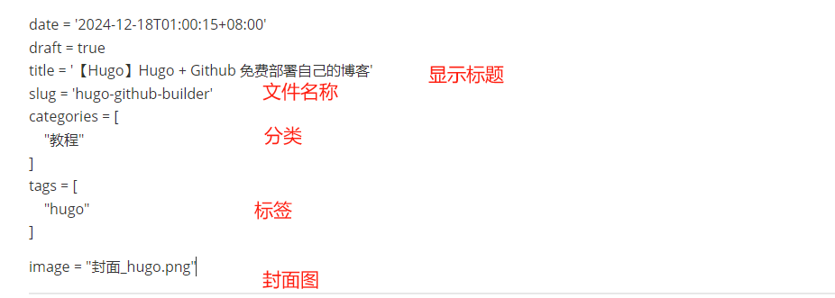

教程 【Hugo】Hugo的使用 使用hugo生成博客内容，进行编辑使用 【Hugo】Hugo的使用 使用hugo生成博客内容，进行编辑使用 重要的目录 1 2 3 4 5 6 7 \content\post\文章路径\index.md -- 文章目录 \content\page\ -- 首页左边展示的各项目 如下 \content\page\links\index.md -- 收藏链接 \content\page\archives\index.md -- 归档（分类&标签） \content\page\about\index.md -- 关于 \content\page\search\index.md -- 搜索 文章 创建文章 1 ./hugo new content post/文章路径/index.md 文章结构  1 2 3 4 5 6 7 8 9 10 11 12 slug = 'hugo-github-builder' description = "这是一个副标题" categories = [ "java", "spring" ] tags = [ "java", "测试" ] image = "封面_hugo.png" 上传github命令 1 2 3 git add . git commit -m "" git push